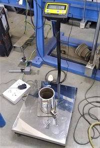

1. About 3 kg of air-dried soil from thoroughly mixed portion of material passing 425 micron I.S sieve is to be obtained.
2. Thoroughly mix the sample with sufficient water to dampen it to approximately four to six percentage.
3. Weigh the proctor mould without base plate and collar.

4. Fix the collar and base plate. Place the soil in the Proctor mould and compact it in 3 layers giving 25 blows per layer with the 2.5 kg rammer falling through.
5. Remove the collar, trim the compacted soil even with the top of the mould by means of the straight edge and weigh
6. Remove the sample from the mould and obtain a small sample for moisture determination.
7. Add water in sufficient amounts to increase the moisture content of the soil sample by 1-2 percentage and repeat the above procedure for each increment of water added. Continue this series of determination until there is either a decrease in the wet unit weight of the compacted soil.